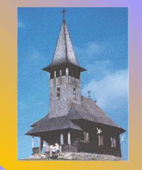

|  |
.Professor of HistoryCollege of Arts and Sciences University of Louisville, Louisville, KY The simplest questions can be the most difficult to answer. The Turks of today are citizens of the Turkish Republic. The name Turk is also used to describe the people in Turkey who share the distinctive Turkish culture, especially the Turkish language , which all Turkish citizens do not share, no more than all Americans speak English. Or a Turk can also mean a member of the great linguistic and cultural family of the Turks,a family that stretches from China to Europe, bound together by language and history. |